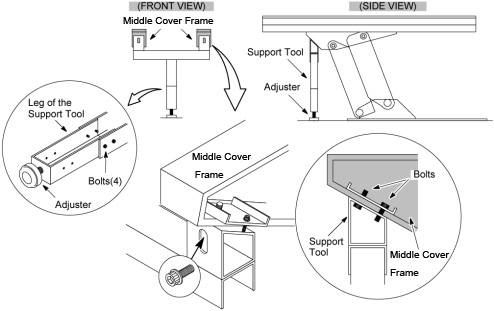
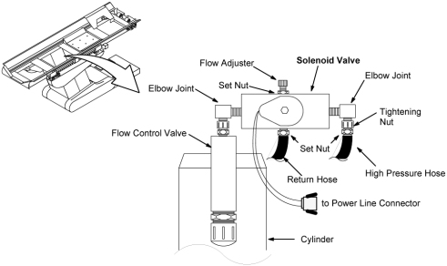
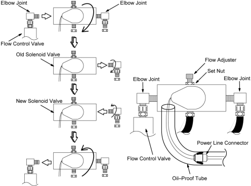
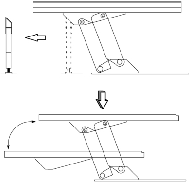

Operating Documentation
Direction 5181166-800, Rev# 7
BrightSpeed Select Service Methods Adv
Operating Documentation |
| Required Persons | Preliminary Reqs | Procedure | Finalization |
|---|---|---|---|
| 1 |
| Last Revised: | 16 March 2007 |
| Item | Qty | Effectivity | Part# | Manufacturer | |
|---|---|---|---|---|---|
| Support Tool | 1 | - | 2212864 | - | |
| Item | Qty | Effectivity | Part# | Manufacturer |
|---|---|---|---|---|
| Oil | 1 | - | Z9807QD | - |
| Sealing Tape | 1 | - | - | - |
| Tie-wrap | - | - | - | |
| Kim wipe | - | - | - |
| Item | Qty | Effectivity | Part# | Manufacturer | |
|---|---|---|---|---|---|
| Solenoid Valve | 1 | - | 2201350 | - | |
| CRASH HAZARD! | |
| THE TABLE MUST BE SUPPORTED USING THE SUPPORT TOOL AS DESCRIBED BELOW WHEN CHANGING THE SOLENOID VALVE. | |
| Understand and follow the Safety Guidelines Manual. | |
Remove the following covers and component:
Top Covers (Left and Right side) (Refer to Table Covers Removal)
Middle Side Cover (Left and Right side) (Refer to Table Covers Removal)
Cradle (Refer to Cradle)
Middle Rear Cover (Two(2) Screws)
Left and Right Rail Covers (Four(4)x2 Screws)
Cradle Tray (Six(6) Screws)
Bottom Covers (front and bottom) (Refer to Table Covers Removal)
For systems where the Table lowest height is set to 350 mm (Normal Setting), lower the Table to its lower mechanical limit position.
| NOTE: | For systems where the Table lowest height is set to 650
mm (Compact Siting Mode),attach the support tool as follows: When using the support tool, the adjuster should be partially extended, about 5cm, before supporting the Table. |
Assemble the Table Support Tool.
Attach the support tool to the undersurface of the Table on the side farthest from the Gantry using the four bolts currently screwed into the bottom of the Middle Cover frame. Lower the Table onto the support.
"Remove power from Table by turning off “120VAC”, “Axial Drive” and “HVDC” switches on the service switch panel."
Illustration 1: Table Support Tool

Remove the solenoid valve as follows:
Disconnect the power wire connector leading from the solenoid valve.
Slightly loosen the set and tightening nuts securing the high pressure hoses, then disconnect the high pressure hose.
Loosen the set and tightening nuts and disconnect the return hose.
Illustration 2: Table Solenoid Valve

Remove the solenoid valve from the elbow joint on flow control valve by turning it CCW.
| NOTE: | When wrapping sealing tape around end joints, wrap the tape in the opposite direction of the threads (about one and half turns). |
Remove the elbow joint from the solenoid valve and attache it to the new solenoid valve using sealing tape.
Install the new solenoid valve assy to the elbow joint on the flow control valve.
Attache the high pressure hose and return hose to the new solenoid valve (see Illustration 2).
Connect the power wire connector and cover it with oil–proof tube.
Adjust the flow adjuster by turning it fully CW and then two full turns CCW.
Tighten all nuts and retie any wraps which have been removed.
Illustration 3: Table Solenoid Valve Replacement

Loosen the adjuster of the support tool and carefully remove the support tool from under the table.
Power up the Table from the Service Switch Panel.
Lower the Table and verify that the all movement is smooth and normal.
Illustration 4: Table Support Tool Removal

| CRASH HAZARD. | |
| Do not move the Table upwards after replacing the magnetic flow valve until it has been lowered first; this will feed unwanted air into the valve. | |
Move the Table up and verify that it is operating normally. If there is a shortage of oil (the Table will not rise to its normal limit), add more oil by referring to TABLE POMP MINOR LUBRICATION.
Move the Table up and down a few times to remove air from the hydraulic system.
Restore the Table to original configuration.
No finalization required.